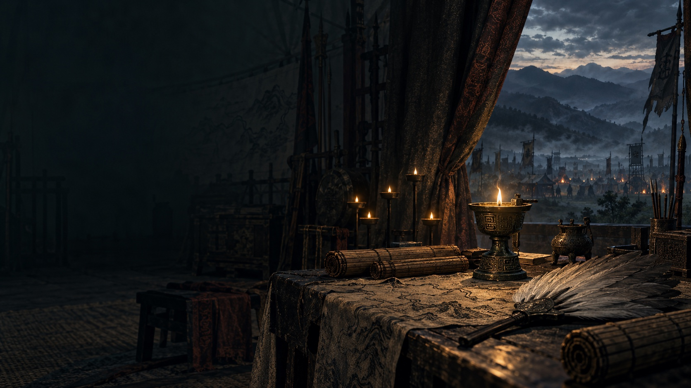
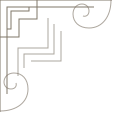
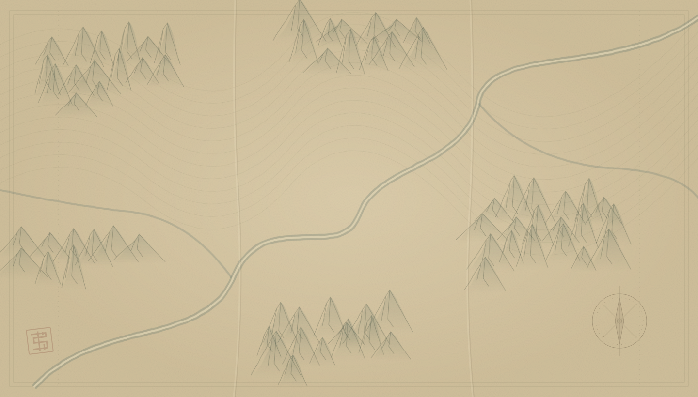
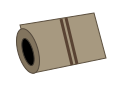
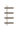

source-art/visuals/archive/20261022/style-branches/branch-E1-gate.png1672 × 941 · opaque-no-alpha绑定：无运行时 manifest 绑定现用、试验、归档分开显示；棋盘格仅用于辨认真实透明通道。未绑定与失效是两回事，未绑定图不自动删除。本页不代表用户视觉审批。
source-art/visuals/archive/20261022/style-branches/branch-E1-gate.png1672 × 941 · opaque-no-alpha绑定：无运行时 manifest 绑定
source-art/visuals/archive/20261022/style-branches/branch-E2-waiting.png1672 × 941 · opaque-no-alpha绑定：无运行时 manifest 绑定
source-art/visuals/archive/20261022/ui-material-prototypes/ui-button-darkwood-v01.png2172 × 724 · real-alpha绑定：无运行时 manifest 绑定
source-art/visuals/archive/20261022/ui-material-prototypes/ui-panel-hemp-paper-v01.png1536 × 1024 · real-alpha绑定：无运行时 manifest 绑定
source-art/visuals/archive/20261022/ui-material-prototypes/ui-panel-ink-linen-v01.png2172 × 724 · real-alpha绑定：无运行时 manifest 绑定
source-art/visuals/archive/20261022/ui-material-prototypes/ui-seal-cinnabar-v01.png1254 × 1254 · real-alpha绑定：无运行时 manifest 绑定
source-art/visuals/style-tests/20261019/A-gentle.png1672 × 941 · opaque-no-alpha绑定：无运行时 manifest 绑定
source-art/visuals/style-tests/20261019/B-live-action.png1672 × 941 · opaque-no-alpha绑定：无运行时 manifest 绑定
source-art/visuals/style-tests/20261019/C-atmospheric.png1672 × 941 · opaque-no-alpha绑定：无运行时 manifest 绑定
source-art/visuals/style-tests/20261019-first-person/P1-grey-daylight.png1672 × 941 · opaque-no-alpha绑定：无运行时 manifest 绑定
source-art/visuals/style-tests/20261019-first-person/P2-ink-warmth.png1672 × 941 · opaque-no-alpha绑定：无运行时 manifest 绑定
source-art/visuals/style-tests/20261019-first-person/P3-original-keywords.png1672 × 941 · opaque-no-alpha绑定：无运行时 manifest 绑定
source-art/visuals/style-tests/20261019-new-direction/D-refined-realism.png1672 × 941 · opaque-no-alpha绑定：无运行时 manifest 绑定
source-art/visuals/style-tests/20261019-new-direction/E-poetic-atmosphere.png1672 × 941 · opaque-no-alpha绑定：无运行时 manifest 绑定
source-art/visuals/style-tests/20261019-new-direction/F-refined-hybrid.png1672 × 941 · opaque-no-alpha绑定：无运行时 manifest 绑定
source-art/visuals/review/20261022/EN02B-A-reference.png1280 × 720 · opaque-no-alpha绑定：无运行时 manifest 绑定
source-art/visuals/review/20261022/EN03-reference.png1280 × 720 · opaque-no-alpha绑定：无运行时 manifest 绑定
source-art/visuals/review/20261022/EN04-reference.png1280 × 720 · opaque-no-alpha绑定：无运行时 manifest 绑定
source-art/visuals/review/20261022/PR01-A-reference.png1280 × 720 · opaque-no-alpha绑定：无运行时 manifest 绑定
source-art/visuals/review/20261022/SC03-reference.png1280 × 720 · opaque-no-alpha绑定：无运行时 manifest 绑定
source-art/visuals/review/20261022/characters-neutral-review.jpg900 × 450 · opaque-no-alpha绑定：无运行时 manifest 绑定
source-art/visuals/review/20261022/runtime-before.jpg1200 × 680 · opaque-no-alpha绑定：无运行时 manifest 绑定
source-art/visuals/style-tests/20261019-new-direction/user-atmosphere-reference.png512 × 288 · opaque-alpha-channel绑定：无运行时 manifest 绑定
GameStarter/web-demo/public/campaign-landscape-v02.png1672 × 941 · opaque-no-alpha绑定：无运行时 manifest 绑定
GameStarter/web-demo/public/main-menu-background-v01.jpg1672 × 941 · opaque-no-alpha绑定：无运行时 manifest 绑定
GameStarter/web-demo/public/campaign-map.svgNone × None · vector-not-raster-measured绑定：无运行时 manifest 绑定
GameStarter/web-demo/public/ending-corner.svgNone × None · vector-not-raster-measured绑定：无运行时 manifest 绑定
GameStarter/web-demo/public/ending-grain.svg180 × 180 · vector-not-raster-measured绑定：无运行时 manifest 绑定
GameStarter/web-demo/public/main-menu-button-active-v02.png1983 × 793 · real-alpha绑定：无运行时 manifest 绑定
GameStarter/web-demo/public/main-menu-button-idle-v02.png2164 × 727 · real-alpha绑定：无运行时 manifest 绑定
GameStarter/web-demo/public/main-menu-title-v02.png1536 × 1024 · real-alpha绑定：无运行时 manifest 绑定
source-art/visuals/runtime/characters/guard.png1086 × 1448 · opaque-no-alpha绑定：无运行时 manifest 绑定
source-art/visuals/runtime/characters/jiangwei.png1086 × 1448 · opaque-no-alpha绑定：无运行时 manifest 绑定
source-art/visuals/runtime/characters/relay.png1086 × 1448 · opaque-no-alpha绑定：无运行时 manifest 绑定
source-art/visuals/runtime/characters/scout-transparent-v02.png1086 × 1448 · real-alpha绑定：characters/scout
source-art/visuals/runtime/characters/weiyan.png1086 × 1448 · opaque-no-alpha绑定：无运行时 manifest 绑定
source-art/visuals/runtime/characters/zhugeliang.png1086 × 1448 · opaque-no-alpha绑定：无运行时 manifest 绑定
source-art/visuals/runtime/characters/guard/neutral-v3.png1024 × 1536 · real-alpha绑定：characters/guard, characters/jiangwei_guard
source-art/visuals/runtime/characters/jiangwei/concerned-v3.png1024 × 1536 · real-alpha绑定：characters/jiangwei_concerned
source-art/visuals/runtime/characters/jiangwei/neutral-v3.png1024 × 1536 · real-alpha绑定：characters/jiangwei
source-art/visuals/runtime/characters/jiangwei/resolved-v3.png1024 × 1536 · real-alpha绑定：characters/jiangwei_resolved
source-art/visuals/runtime/characters/relay/neutral-v3.png1024 × 1536 · real-alpha绑定：characters/relay
source-art/visuals/runtime/characters/weiyan/alert-v3.png1024 × 1536 · real-alpha绑定：characters/weiyan_alert
source-art/visuals/runtime/characters/weiyan/neutral-v3.png1024 × 1536 · real-alpha绑定：characters/weiyan
source-art/visuals/runtime/characters/weiyan/resolved-v3.png1024 × 1536 · real-alpha绑定：characters/weiyan_resolved
source-art/visuals/runtime/characters/zhugeliang/neutral-v3.png1024 × 1536 · real-alpha绑定：characters/zhugeliang
source-art/visuals/runtime/characters/zhugeliang/resolved-v3.png1024 × 1536 · real-alpha绑定：characters/zhugeliang_resolved
source-art/visuals/runtime/characters/zhugeliang/weary-v3.png1024 × 1536 · real-alpha绑定：characters/zhugeliang_weary
source-art/visuals/runtime/cinematics/report_post_people.png1672 × 941 · opaque-no-alpha绑定：cinematics/report_post_people
source-art/visuals/runtime/cinematics/weiyan_report_post.png1672 × 941 · opaque-no-alpha绑定：cinematics/weiyan_report_post
source-art/visuals/runtime/scenes/camp_gate.png1672 × 941 · opaque-no-alpha绑定：无运行时 manifest 绑定
source-art/visuals/runtime/scenes/relay_tent.png1672 × 941 · opaque-no-alpha绑定：scenes/relay_tent
source-art/visuals/runtime/scenes/report_post.png1672 × 941 · opaque-no-alpha绑定：无运行时 manifest 绑定
source-art/visuals/runtime/scenes/waiting_area.png1672 × 941 · opaque-no-alpha绑定：scenes/waiting_area
source-art/visuals/runtime/scenes/camp-v3/camp_gate.png1672 × 941 · opaque-no-alpha绑定：scenes/camp_gate, scenes/notice_front
source-art/visuals/runtime/scenes/camp-v3/jiangwei_tent_front.png1672 × 941 · opaque-no-alpha绑定：scenes/jiangwei_tent_front
source-art/visuals/runtime/scenes/camp-v3/report_post.png1672 × 941 · opaque-no-alpha绑定：scenes/report_post
source-art/visuals/runtime/ui/campaign-map.svgNone × None · vector-not-raster-measured绑定：无运行时 manifest 绑定source-art/visuals/runtime/ui/evidence-notice.svg120 × 90 · vector-not-raster-measured绑定：ui/evidence_notice
source-art/visuals/runtime/ui/evidence-pass.svg120 × 90 · vector-not-raster-measured绑定：ui/evidence_pass
source-art/visuals/runtime/ui/evidence-report.svg120 × 90 · vector-not-raster-measured绑定：ui/evidence_report
source-art/visuals/runtime/ui/evidence-tag.svg48 × 178 · vector-not-raster-measured绑定：ui/evidence_tag
source-art/visuals/runtime/ui/evidence-testimony.svg120 × 90 · vector-not-raster-measured绑定：ui/evidence_testimonysource-art/visuals/runtime/ui/scene-active.svg282 × 72 · vector-not-raster-measured绑定：ui/scene_active
source-art/visuals/runtime/ui/scene-paper.svg282 × 72 · vector-not-raster-measured绑定：ui/scene_paper
source-art/visuals/runtime/ui/title-ink.svg320 × 56 · vector-not-raster-measured绑定：ui/title_inksource-art/visuals/runtime/ui/icons/arrow.svgNone × None · vector-not-raster-measured绑定：ui/icon_arrowsource-art/visuals/runtime/ui/icons/check.svgNone × None · vector-not-raster-measured绑定：ui/icon_checksource-art/visuals/runtime/ui/icons/close.svgNone × None · vector-not-raster-measured绑定：ui/icon_close
source-art/visuals/runtime/ui/icons/grip.svgNone × None · vector-not-raster-measured绑定：ui/icon_gripsource-art/visuals/runtime/ui/icons/hotspot.svgNone × None · vector-not-raster-measured绑定：ui/icon_hotspotsource-art/visuals/runtime/ui/icons/rule-ink.svgNone × None · vector-not-raster-measured绑定：ui/rule_ink
source-art/visuals/spatial/camp-v1/camp-plan.png1356 × 1289 · opaque-no-alpha绑定：无运行时 manifest 绑定
source-art/visuals/spatial/camp-v1/camp-plan.svg1200 × 1140 · vector-not-raster-measured绑定：无运行时 manifest 绑定
source-art/visuals/spatial/camp-v1/main-tent-plan.png1356 × 1019 · opaque-no-alpha绑定：无运行时 manifest 绑定
source-art/visuals/spatial/camp-v1/main-tent-plan.svg1200 × 900 · vector-not-raster-measured绑定：无运行时 manifest 绑定
source-art/visuals/spatial/camp-v1/preview-SC03.png1356 × 711 · opaque-no-alpha绑定：无运行时 manifest 绑定
source-art/visuals/spatial/camp-v1/preview-council.png1356 × 711 · opaque-no-alpha绑定：无运行时 manifest 绑定
source-art/visuals/spatial/camp-v1/preview-ending.png1356 × 711 · opaque-no-alpha绑定：无运行时 manifest 绑定
source-art/visuals/spatial/camp-v1/preview-guard.png1356 × 711 · opaque-no-alpha绑定：无运行时 manifest 绑定
source-art/visuals/spatial/camp-v1/preview-interior.png1356 × 711 · opaque-no-alpha绑定：无运行时 manifest 绑定
source-art/visuals/spatial/camp-v1/preview-jiang.png1356 × 711 · opaque-no-alpha绑定：无运行时 manifest 绑定
source-art/visuals/spatial/camp-v1/preview-jiangwei.png1536 × 865 · opaque-no-alpha绑定：无运行时 manifest 绑定
source-art/visuals/spatial/camp-v1/preview-judgment.png1356 × 711 · opaque-no-alpha绑定：无运行时 manifest 绑定
source-art/visuals/spatial/camp-v1/preview-overview.png1356 × 711 · opaque-no-alpha绑定：无运行时 manifest 绑定
source-art/visuals/spatial/camp-v1/preview-report-dialogue.png1356 × 711 · opaque-no-alpha绑定：无运行时 manifest 绑定
source-art/visuals/spatial/camp-v1/preview-report.png1536 × 865 · opaque-no-alpha绑定：无运行时 manifest 绑定
source-art/visuals/spatial/camp-v1/preview-ritual.png1356 × 711 · opaque-no-alpha绑定：无运行时 manifest 绑定
source-art/visuals/spatial/camp-v1/evidence/EN02B-A-1.5s.jpg960 × 540 · opaque-no-alpha绑定：无运行时 manifest 绑定
source-art/visuals/spatial/camp-v1/evidence/EN03-8.8s.jpg960 × 540 · opaque-no-alpha绑定：无运行时 manifest 绑定
source-art/visuals/spatial/camp-v1/evidence/EN04-4.0s.jpg960 × 540 · opaque-no-alpha绑定：无运行时 manifest 绑定
source-art/visuals/spatial/camp-v1/evidence/PR01-A-1.0s.jpg960 × 540 · opaque-no-alpha绑定：无运行时 manifest 绑定
source-art/visuals/spatial/camp-v1/evidence/PR01-A-6.4s.jpg960 × 540 · opaque-no-alpha绑定：无运行时 manifest 绑定
source-art/visuals/spatial/camp-v1/evidence/PR01-B-5.3s.jpg960 × 540 · opaque-no-alpha绑定：无运行时 manifest 绑定
source-art/visuals/spatial/camp-v1/evidence/SC03-11.6s.jpg960 × 540 · opaque-no-alpha绑定：无运行时 manifest 绑定